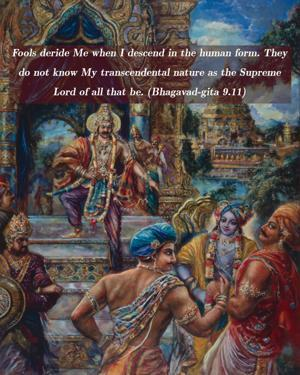
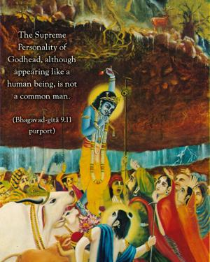
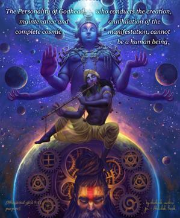
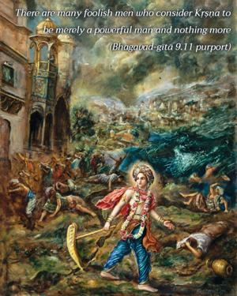
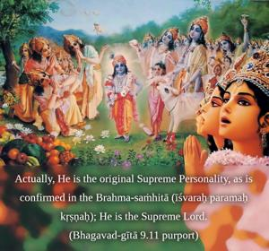
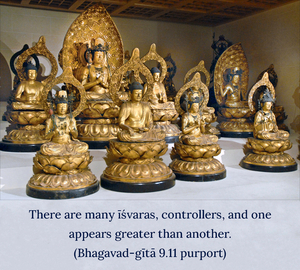

Fools deride Me when I descend in the human form. They do not know My transcendental nature as the Supreme Lord of all that be.






From the other explanations of the previous verses in this chapter, it is clear that the Supreme Personality of Godhead, although appearing like a human being, is not a common man. The Personality of Godhead, who conducts the creation, maintenance and annihilation of the complete cosmic manifestation, cannot be a human being. Yet there are many foolish men who consider Kṛṣṇa to be merely a powerful man and nothing more. Actually, He is the original Supreme Personality, as is confirmed in the Brahma-saṁhitā (īśvaraḥ paramaḥ kṛṣṇaḥ); He is the Supreme Lord.
There are many īśvaras, controllers, and one appears greater than another. In the ordinary management of affairs in the material world, we find some official or director, and above him there is a secretary, and above him a minister, and above him a president. Each of them is a controller, but one is controlled by another. In the Brahma-saṁhitā it is said that Kṛṣṇa is the supreme controller; there are many controllers undoubtedly, both in the material and spiritual world, but Kṛṣṇa is the supreme controller (īśvaraḥ paramaḥ kṛṣṇaḥ), and His body is sac-cid-ānanda, nonmaterial.
Material bodies cannot perform the wonderful acts described in previous verses. His body is eternal, blissful and full of knowledge. Although He is not a common man, the foolish deride Him and consider Him to be a man. His body is called here mānuṣīm because He is acting just like a man, a friend of Arjuna’s, a politician involved in the Battle of Kurukṣetra. In so many ways He is acting just like an ordinary man, but actually His body is sac-cid-ānanda-vigraha – eternal bliss and knowledge absolute. This is confirmed in the Vedic language also. Sac-cid-ānanda-rūpāya kṛṣṇāya: “I offer my obeisances unto the Supreme Personality of Godhead, Kṛṣṇa, who is the eternal blissful form of knowledge.” (Gopāla-tāpanī Upaniṣad 1.1) There are other descriptions in the Vedic language also. Tam ekaṁ govindam: “You are Govinda, the pleasure of the senses and the cows.” Sac-cid-ānanda-vigraham: “And Your form is transcendental, full of knowledge, bliss and eternality.” (Gopāla-tāpanī Upaniṣad 1.38)
Despite the transcendental qualities of Lord Kṛṣṇa’s body, its full bliss and knowledge, there are many so-called scholars and commentators of Bhagavad-gītā who deride Kṛṣṇa as an ordinary man. The scholar may be born an extraordinary man due to his previous good work, but this conception of Śrī Kṛṣṇa is due to a poor fund of knowledge. Therefore he is called mūḍha, for only foolish persons consider Kṛṣṇa to be an ordinary human being. The foolish consider Kṛṣṇa an ordinary human being because they do not know the confidential activities of the Supreme Lord and His different energies. They do not know that Kṛṣṇa’s body is a symbol of complete knowledge and bliss, that He is the proprietor of everything that be and that He can award liberation to anyone. Because they do not know that Kṛṣṇa has so many transcendental qualifications, they deride Him.
Nor do they know that the appearance of the Supreme Personality of Godhead in this material world is a manifestation of His internal energy. He is the master of the material energy. As has been explained in several places (mama māyā duratyayā), He claims that the material energy, although very powerful, is under His control, and whoever surrenders unto Him can get out of the control of this material energy. If a soul surrendered to Kṛṣṇa can get out of the influence of material energy, then how can the Supreme Lord, who conducts the creation, maintenance and annihilation of the whole cosmic nature, have a material body like us? So this conception of Kṛṣṇa is complete foolishness. Foolish persons, however, cannot conceive that the Personality of Godhead, Kṛṣṇa, appearing just like an ordinary man, can be the controller of all the atoms and of the gigantic manifestation of the universal form. The biggest and the minutest are beyond their conception, so they cannot imagine that a form like that of a human being can simultaneously control the infinite and the minute. Actually, although He is controlling the infinite and the finite, He is apart from all this manifestation. It is clearly stated concerning His yogam aiśvaram, His inconceivable transcendental energy, that He can control the infinite and the finite simultaneously and that He can remain aloof from them. Although the foolish cannot imagine how Kṛṣṇa, who appears just like a human being, can control the infinite and the finite, those who are pure devotees accept this, for they know that Kṛṣṇa is the Supreme Personality of Godhead. Therefore they completely surrender unto Him and engage in Kṛṣṇa consciousness, devotional service of the Lord.
There are many controversies between the impersonalists and the personalists about the Lord’s appearance as a human being. But if we consult Bhagavad-gītā and Śrīmad-Bhāgavatam, the authoritative texts for understanding the science of Kṛṣṇa, then we can understand that Kṛṣṇa is the Supreme Personality of Godhead. He is not an ordinary man, although He appeared on this earth as an ordinary human. In the Śrīmad-Bhāgavatam, First Canto, First Chapter, when the sages headed by Śaunaka inquired about the activities of Kṛṣṇa, they said:
kṛtavān kila karmāṇi
saha rāmeṇa keśavaḥ
ati-martyāni bhagavān
gūḍhaḥ kapaṭa-māṇuṣaḥ
“Lord Śrī Kṛṣṇa, the Supreme Personality of Godhead, along with Balarāma, played like a human being, and so masked He performed many superhuman acts.” (Bhāg. 1.1.20) The Lord’s appearance as a man bewilders the foolish. No human being could perform the wonderful acts that Kṛṣṇa performed while He was present on this earth. When Kṛṣṇa appeared before His father and mother, Vasudeva and Devakī, He appeared with four hands, but after the prayers of the parents He transformed Himself into an ordinary child. As stated in the Bhāgavatam (10.3.46), babhūva prākṛtaḥ śiśuḥ: He became just like an ordinary child, an ordinary human being. Now, here again it is indicated that the Lord’s appearance as an ordinary human being is one of the features of His transcendental body. In the Eleventh Chapter of Bhagavad-gītā also it is stated that Arjuna prayed to see Kṛṣṇa’s form of four hands (tenaiva rūpeṇa catur-bhujena). After revealing this form, Kṛṣṇa, when petitioned by Arjuna, again assumed His original humanlike form (mānuṣaṁ rūpam). These different features of the Supreme Lord are certainly not those of an ordinary human being.
Some of those who deride Kṛṣṇa and who are infected with the Māyāvādī philosophy quote the following verse from the Śrīmad-Bhāgavatam (3.29.21) to prove that Kṛṣṇa is just an ordinary man. Ahaṁ sarveṣu bhūteṣu bhūtātmāvasthitaḥ sadā: “The Supreme is present in every living entity.” We should better take note of this particular verse from the Vaiṣṇava ācāryas like Jīva Gosvāmī and Viśvanātha Cakravartī Ṭhākura instead of following the interpretation of unauthorized persons who deride Kṛṣṇa. Jīva Gosvāmī, commenting on this verse, says that Kṛṣṇa, in His plenary expansion as Paramātmā, is situated in the moving and the nonmoving entities as the Supersoul, so any neophyte devotee who simply gives his attention to the arcā-mūrti, the form of the Supreme Lord in the temple, and does not respect other living entities is uselessly worshiping the form of the Lord in the temple. There are three kinds of devotees of the Lord, and the neophyte is in the lowest stage. The neophyte devotee gives more attention to the Deity in the temple than to other devotees, so Viśvanātha Cakravartī Ṭhākura warns that this sort of mentality should be corrected. A devotee should see that because Kṛṣṇa is present in everyone’s heart as Paramātmā, every body is the embodiment or the temple of the Supreme Lord; so as one offers respect to the temple of the Lord, he should similarly properly respect each and every body in which the Paramātmā dwells. Everyone should therefore be given proper respect and should not be neglected.
There are also many impersonalists who deride temple worship. They say that since God is everywhere, why should one restrict himself to temple worship? But if God is everywhere, is He not in the temple or in the Deity? Although the personalist and the impersonalist will fight with one another perpetually, a perfect devotee in Kṛṣṇa consciousness knows that although Kṛṣṇa is the Supreme Personality, He is all-pervading, as confirmed in the Brahma-saṁhitā. Although His personal abode is Goloka Vṛndāvana and He is always staying there, by His different manifestations of energy and by His plenary expansion He is present everywhere in all parts of the material and spiritual creation.